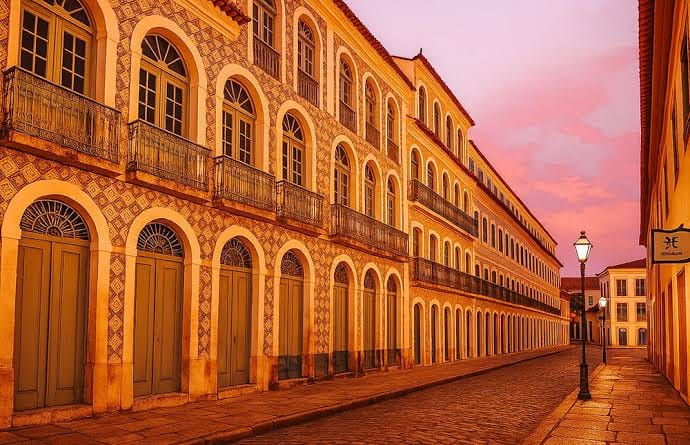
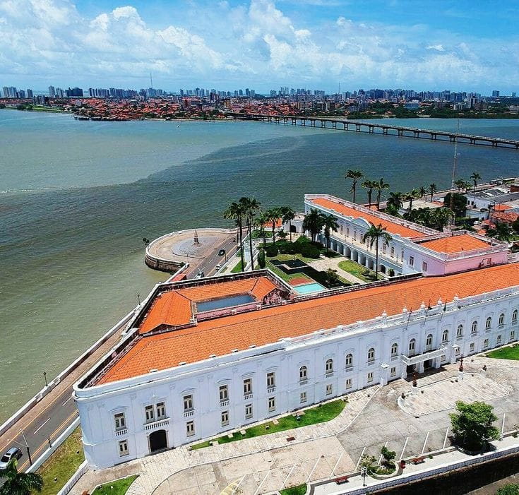
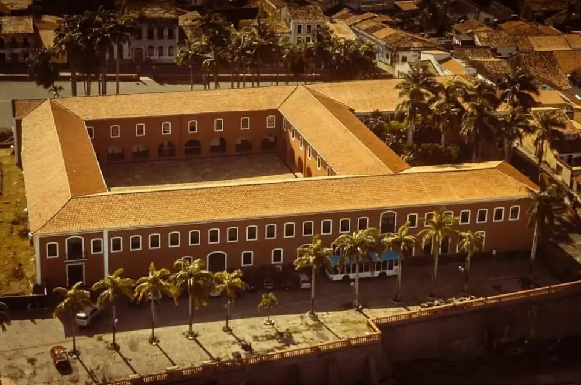
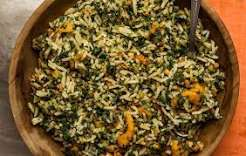
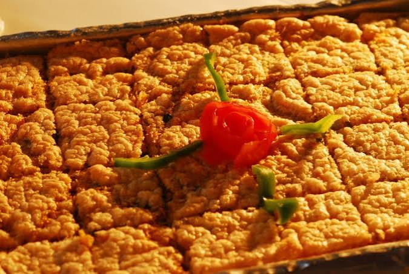
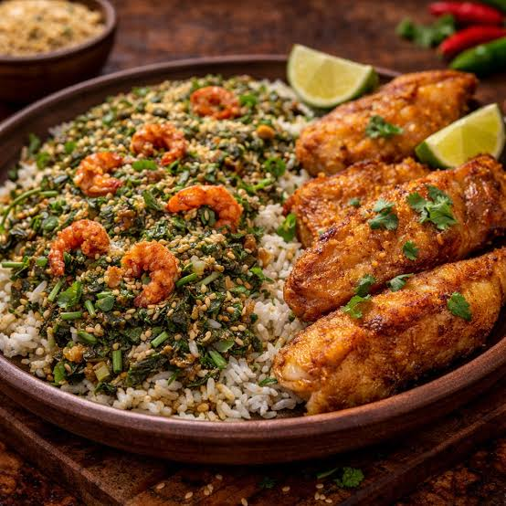
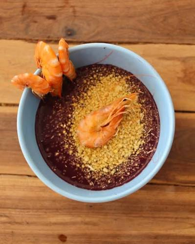
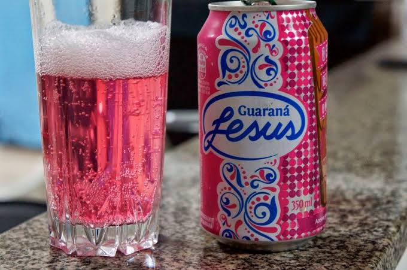

Centro Histórico
Conhecido por seus belos casarões colonial portugueses revestidos de azulejos históricos e ruas de paralelepípedo.
0 curtidas

Conhecido por seus belos casarões colonial portugueses revestidos de azulejos históricos e ruas de paralelepípedo.

Sede do governo estadual, o palácio é uma construção histórica deslumbrante situada de frente para a baía de São Marcos.

Edificação histórica do século XVII que abriga um rico acervo cultural e exposições sobre a história maranhense.





A cultura de São Luís é marcada por ritmos envolventes, tradições folclóricas e grande diversidade artística:
Patrimônio Cultural Imaterial da Humanidade, misturando ritmos como orquestra, zabumba e matracas em uma festa vibrante.
São Luís é conhecida como a "Jamaica Brasileira", mantendo viva a cultura das radiolas e das danças agarradinhas.
Manifestação de dança circular embalada pelo som dos tambores de tronco e pela alegria das coreiras.